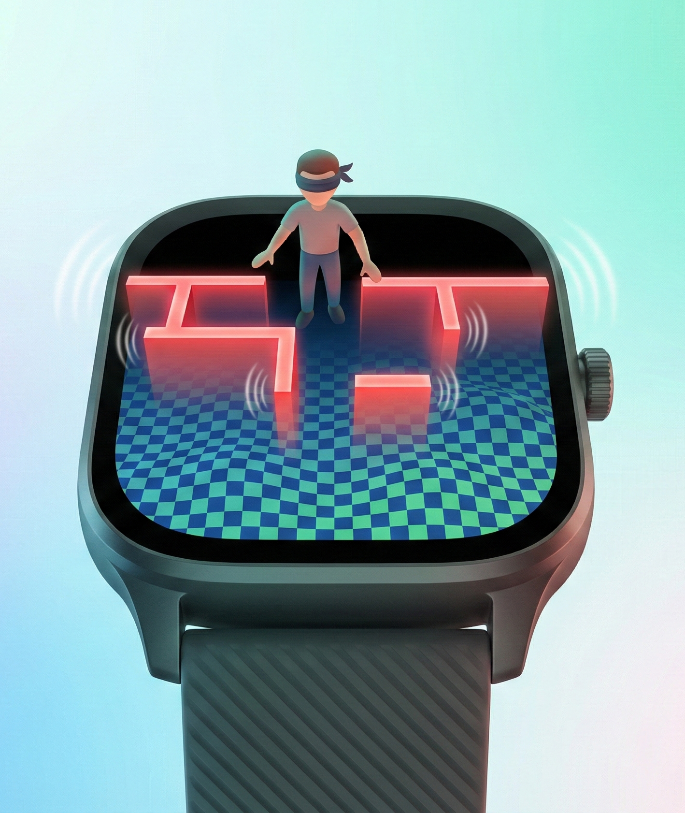
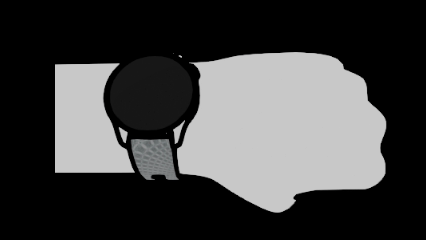
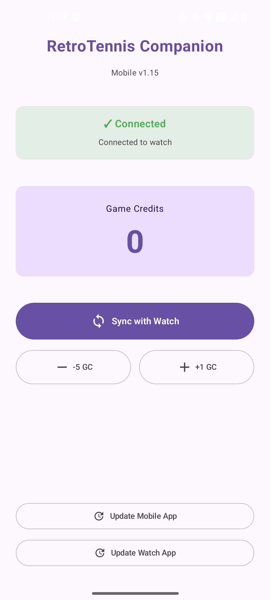
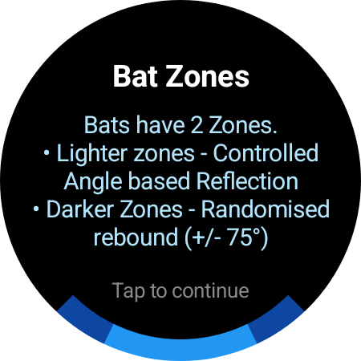

Wearable Gaming
Infrastructure
Actively shipping sensor-first games for Wear OS and WatchOS. RetroTennis is live in beta, RageRide is 60% complete, and more titles are on the way. We leverage gyroscope, accelerometer, and haptic feedback to create experiences that only wearables can deliver.

Our Games
Every game uses our proprietary Roko Sensor Engine — reusable middleware for gyroscope, accelerometer, and haptic feedback controls.

RetroTennis
Gyro-Controlled Sports • Wear OS • Public Launch March 2026
One of the first computer games ever made, reimagined for your smartwatch. Tilt your wrist to control the paddle — no screen touches required. Built from scratch for circular smartwatch screens with haptic feedback on every hit.
- Pure WearOS gameplay — play anywhere, anytime
- Retro graphics with ultra-smooth animations
- Built to be light and fast even on older devices
- Offline mode — no internet required
- Premium unlock removes ads (one-time purchase, no subscriptions)
- Companion app to manage credits and sync progress
Closed Testing Installation Guide
- Sign in with the Google account you want to use on the device.
- Join the tester group: groups.google.com/g/retrotennis-beta
- On your Android device, open the Play Store and go to the app listing. You should see the option to install the beta build.
- If you don't see it immediately, try opening the link directly on the device or clearing the Play Store cache.
Trouble? Contact us at gskskiran@gmail.com.

RageRide
Gyro Racing • Wear OS
Retro motorcycle racing with tilt-to-steer mechanics. Dodge traffic, combat opponents, and feel every bump through haptic feedback. Controls are being refined — core gameplay is locked in.

Pinball
Physics Arcade • Wear OS
Classic pinball reimagined for smartwatches. Use gyro nudging to influence ball trajectory and the crown button for flippers. Pure arcade haptic feedback.
See It In Action
Real gameplay on real Wear OS smartwatches — tilt controls, haptic feedback, zero screen touches required.
RetroTennis Screenshots








Roko Sensor Engine
Our proprietary reusable middleware sits between raw sensor hardware and game logic, handling everything a smartwatch game needs to feel native and responsive.
The engine enables us to ship 3–4 games for the cost of a single traditional watch game. We're not porting mobile games to watches — we're defining the interaction model for a new platform.
About Roko Games
Roko Games is an IMAGE CoE (STPI Hyderabad) incubated startup building the wearable gaming infrastructure layer. We're creating the "Angry Birds moment" for smartwatches — platform-native games that prove wearable gaming is a real, viable category, not just a novelty.
Incorporated in January 2026, backed by STPI through a SAFEST investment agreement, and registered as a Micro Enterprise (MSME). We move fast, ship lean, and build for sensors first.
G.S.K.S. Kiran
Founder & CEO
2.5+ years Android/Wear OS development. 2 shipped commercial apps. Open-source contributor. Lead developer and architect.
G. Gayathri
Co-founder & Communication Head
Management professional with 3+ years corporate experience in HR and organizational leadership. Leads community engagement, partnerships, and external communications across all stakeholders.
Market Opportunity
- $486M wearable gaming market (2025), growing at 6.8% CAGR
- 25.4% CAGR Wear OS platform growth through 2030
- $108B → $176B smartwatch market expansion (2025–2029)
- Early-mover advantage in platform-native gaming — no direct competitors building sensor-first
Company Details
- Legal Name: Roko Games Private Limited
- Incorporated: January 7, 2026
- UDYAM Registration: UDYAM-AP-10-0124235 (Micro Enterprise)
- Location: Visakhapatnam, Andhra Pradesh, India
- Incubator: IMAGE CoE, STPI Hyderabad
- Platforms: Wear OS (live), WatchOS (planned)
Get in Touch
Roko Games Private Limited
Incubated at IMAGE CoE, STPI Hyderabad
Visakhapatnam, Andhra Pradesh, India
Email: gskskiran@gmail.com
Phone: +91 9951055918
Founder: G.S.K.S. Kiran (CEO)
From Our Blog
Long-form engineering explainers and practical buying guides.